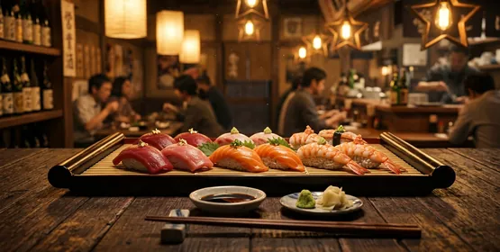
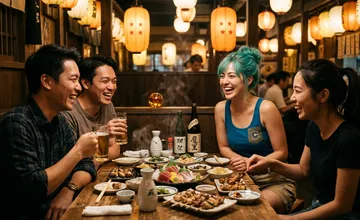
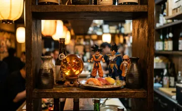
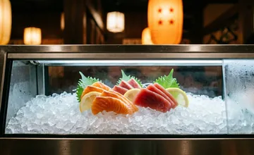

Combo Kamehameha: o prato mais poderoso do Zenkai
Salmão, atum e camarão em uma só bandeja. Conheça a receita, os ingredientes e o segredo do chef Kuririn para montar o combo mais pedido do restaurante.
Ver mais
Aproveite o Zenkai Sushi com os amigos

Dragon Ball no prato e na decoração

Do peixe fresco ao sushi perfeito